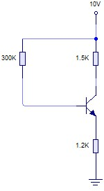

Ejercicio 1: Realimentación de Emisor

Enunciado: Resuelve el siguiente circuito con polarización con realimentación de emisor.
Datos: β=100, VBE=0.65V, RB=300K, RC=1.5K, RE=1.2K, VCC=10V.
Datos: β=100, VBE=0.65V, RB=300K, RC=1.5K, RE=1.2K, VCC=10V.
Pizarra de Resolución - Ejercicio 1
1. Planteamiento de la malla de entrada (Base)
La corriente sale de Vcc, pasa por Rb, entra en la base y sale por el emisor a tierra.
Vcc = I_B · R_B + V_BE + I_E · R_E
Sabemos que I_E ≈ (β + 1) · I_B ≈ 101 · I_B
10 = I_B · 300k + 0.65 + (101 · I_B) · 1.2k
10 - 0.65 = I_B · (300k + 121.2k)
9.35 = I_B · 421.2k
10 - 0.65 = I_B · (300k + 121.2k)
9.35 = I_B · 421.2k
2. Cálculo de Intensidades
I_B = 9.35V / 421200Ω = 0.00002219 A = 0.022 mA
Ahora calculamos el colector (Ic) y el emisor (Ie):
I_C = β · I_B = 100 · 0.022 mA = 2.2 mA
I_E = I_C + I_B = 2.2 + 0.022 = 2.22 mA
I_E = I_C + I_B = 2.2 + 0.022 = 2.22 mA
3. Malla de Salida (Vce)
Recorremos desde Vcc hasta masa pasando por Rc, transistor y Re.
Vcc = I_C · R_C + V_CE + I_E · R_E
V_CE = Vcc - (I_C · R_C) - (I_E · R_E)
V_CE = 10 - (2.2mA · 1.5k) - (2.22mA · 1.2k)
V_CE = 10 - 3.3 - 2.664 = 4.036 V
V_CE = Vcc - (I_C · R_C) - (I_E · R_E)
V_CE = 10 - (2.2mA · 1.5k) - (2.22mA · 1.2k)
V_CE = 10 - 3.3 - 2.664 = 4.036 V
Solución Final
IB = 0.022 mA
IC = 2.2 mA
IE = 2.22 mA
VCE = 4.04 V